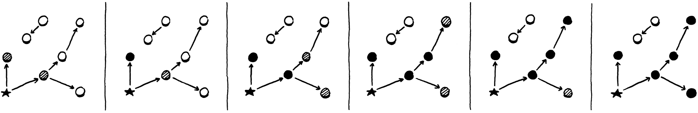

Ramasse-miettes
I wanna, I wanna,
I wanna, I wanna,
I wanna be trash.The Whip, “Trash”
Nous disons que Lox est un langage de “haut niveau” parce qu’il libère les programmeurs de s’inquiéter des détails non pertinents au problème qu’ils résolvent. L’utilisateur devient un exécutif, donnant à la machine des buts abstraits et laissant l’humble ordinateur trouver comment y arriver.
L’allocation dynamique de mémoire est un candidat parfait pour l’automatisation. C’est nécessaire pour un programme fonctionnel, fastidieux à faire à la main, et pourtant encore sujet aux erreurs. Les erreurs inévitables peuvent être catastrophiques, menant à des plantages, de la corruption de mémoire, ou des violations de sécurité. C’est le genre de travail risqué-mais-ennuyeux auquel les machines excellent par rapport aux humains.
C’est pourquoi Lox est un langage géré, ce qui signifie que l’implémentation du langage gère l’allocation mémoire et la libération au nom de l’utilisateur. Quand un utilisateur effectue une opération qui requiert un peu de mémoire dynamique, la VM l’alloue automatiquement. Le programmeur ne s’inquiète jamais de désallouer quoi que ce soit. La machine assure que toute mémoire que le programme utilise reste dans les parages aussi longtemps que nécessaire.
Lox fournit l’illusion que l’ordinateur a une quantité infinie de mémoire. Les utilisateurs peuvent allouer et allouer et allouer et ne jamais une fois penser à d’où tous ces octets viennent. Bien sûr, les ordinateurs n’ont pas encore de mémoire infinie. Donc la façon dont les langages gérés maintiennent cette illusion est en allant dans le dos du programmeur et en réclamant la mémoire dont le programme n’a plus besoin. Le composant qui fait cela est appelé un ramasse-miettes (garbage collector).
26 . 1Accessibilité
Cela soulève une question étonnamment difficile : comment une VM dit-elle quelle mémoire n’est pas nécessaire ? La mémoire est seulement nécessaire si elle est lue dans le futur, mais à moins d’avoir une machine à voyager dans le temps, comment une implémentation peut-elle dire quel code le programme exécutera et quelles données il utilisera ? Spoiler alert : les VMs ne peuvent pas voyager dans le futur. Au lieu de cela, le langage fait une approximation conservatrice : il considère un morceau de mémoire comme étant encore utilisé s’il pourrait possiblement être lu dans le futur.
Cela semble trop conservateur. N’importe quel bout de mémoire ne pourrait-il pas potentiellement être lu ? En fait, non, au moins pas dans un langage sûr en mémoire comme Lox. Voici un exemple :
var a = "first value"; a = "updated"; // GC here. print a;
Disons que nous courons le GC après que l’assignation a complété sur la seconde ligne. La chaîne “first value” est encore assise en mémoire, mais il n’y a aucun moyen pour le programme de l’utilisateur d’arriver à elle. Une fois que a a été réassigné, le programme a perdu toute référence à cette chaîne. Nous pouvons la libérer sûrement. Une valeur est accessible (reachable) s’il y a quelque moyen pour un programme utilisateur de la référencer. Sinon, comme la chaîne “first value” ici, elle est inaccessible (unreachable).
Beaucoup de valeurs peuvent être directement accédées par la VM. Jetez un coup d’œil à :
var global = "string"; { var local = "another"; print global + local; }
Mettez le programme en pause juste après que les deux chaînes ont été concaténées mais avant que l’instruction print ait exécuté. La VM peut atteindre "string" en regardant à travers la table des variables globales et en trouvant l’entrée pour global. Elle peut trouver "another" en marchant la pile de valeurs et en frappant l’emplacement pour la variable locale local. Elle peut même trouver la chaîne concaténée "stringanother" puisque cette valeur temporaire est aussi assise sur la pile de la VM au point où nous avons pausé notre programme.
Toutes ces valeurs sont appelées des racines. Une racine est n’importe quel objet que la VM peut atteindre directement sans passer par une référence dans quelque autre objet. La plupart des racines sont des variables globales ou sur la pile, mais comme nous verrons, il y a une paire d’autres endroits où la VM stocke des références aux objets qu’elle peut trouver.
D’autres valeurs peuvent être trouvées en passant par une référence à l’intérieur d’une autre valeur. Les champs sur les instances de classes sont le cas le plus évident, mais nous n’avons pas ceux-là encore. Même sans ceux-là, notre VM a encore des références indirectes. Considérez :
fun makeClosure() { var a = "data"; fun f() { print a; } return f; } { var closure = makeClosure(); // GC here. closure(); }
Disons que nous mettons en pause le programme sur la ligne marquée et courons le ramasse-miettes. Quand le collecteur a fini et que le programme reprend, il appellera la fermeture, qui appellera à son tour l’affichage de "data". Donc le collecteur a besoin de ne pas libérer cette chaîne. Mais voici à quoi la pile ressemble quand nous mettons en pause le programme :

La chaîne "data" n’est nulle part dessus. Elle a déjà été hissée hors de la pile et déplacée dans l’upvalue fermée que la fermeture utilise. La fermeture elle-même est sur la pile. Mais pour arriver à la chaîne, nous avons besoin de tracer à travers la fermeture et son tableau d’upvalues. Puisqu’il est possible pour le programme de l’utilisateur de faire cela, tous ces objets indirectement accessibles sont aussi considérés accessibles.

Cela nous donne une définition inductive de l’accessibilité :
-
Toutes les racines sont accessibles.
-
N’importe quel objet référé depuis un objet accessible est lui-même accessible.
Ce sont les valeurs qui sont encore “vivantes” et ont besoin de rester en mémoire. Toute valeur qui ne rencontre pas cette définition est juste gibier pour le collecteur à moissonner. Cette paire récursive de règles laisse entendre un algorithme récursif que nous pouvons utiliser pour libérer la mémoire non nécessaire :
-
Commençant avec les racines, traverser à travers les références d’objet pour trouver l’ensemble complet des objets accessibles.
-
Libérer tous les objets pas dans cet ensemble.
Beaucoup d’algorithmes de ramasse-miettes différents sont en usage aujourd’hui, mais ils suivent tous grossièrement cette même structure. Certains peuvent entremêler les étapes ou les mélanger, mais les deux opérations fondamentales sont là. Ils diffèrent surtout dans comment ils effectuent chaque étape.
26 . 2Ramasse-miettes Mark-Sweep
Le premier langage géré fut Lisp, le second langage de “haut niveau” à être inventé, juste après Fortran. John McCarthy considéra utiliser la gestion manuelle de mémoire ou le comptage de références, mais s’installa éventuellement sur (et inventa le terme) ramasse-miettes—une fois que le programme était à court de mémoire, il retournerait en arrière et trouverait le stockage inutilisé qu’il pourrait réclamer.
Il a conçu le tout premier, plus simple algorithme de ramasse-miettes, appelé mark-and-sweep (marquer-et-balayer) ou juste mark-sweep. Sa description tient dans trois courts paragraphes dans le papier initial sur Lisp. Malgré son âge et sa simplicité, le même algorithme fondamental sous-tend beaucoup de gestionnaires de mémoire modernes. Certains coins de l’informatique semblent être intemporels.
Comme le nom l’implique, le mark-sweep fonctionne en deux phases :
-
Marquage (Marking) : Nous commençons avec les racines et traversons ou traçons à travers tous les objets auxquels ces racines se réfèrent. C’est une traversée de graphe classique de tous les objets accessibles. Chaque fois que nous visitons un objet, nous le marquons de quelque manière. (Les implémentations diffèrent dans comment elles enregistrent la marque.)
-
Balayage (Sweeping) : Une fois que la phase de marquage complète, chaque objet accessible dans le tas a été marqué. Cela signifie que tout objet non marqué est inaccessible et mûr pour la réclamation. Nous passons à travers tous les objets non marqués et libérons chacun d’eux.
Cela ressemble à quelque chose comme ceci :

C’est ce que nous allons implémenter. Chaque fois que nous décidons qu’il est temps de réclamer quelques octets, nous tracerons tout et marquerons tous les objets accessibles, libérerons ce qui n’a pas été marqué, et ensuite reprendrons le programme de l’utilisateur.
26 . 2 . 1Collecter les miettes
Ce chapitre entier est à propos d’implémenter cette fonction unique :
void* reallocate(void* pointer, size_t oldSize, size_t newSize);
add after reallocate()
void collectGarbage();
void freeObjects();
Nous travaillerons notre chemin vers une implémentation complète commençant avec cette coque vide :
add after freeObject()
void collectGarbage() { }
La première question que vous pourriez demander est, Quand cette fonction est-elle appelée ? Il s’avère que c’est une question subtile sur laquelle nous passerons un peu de temps plus tard dans le chapitre. Pour le moment nous esquiverons le problème et nous construirons un outil de diagnostic pratique dans le processus.
#define DEBUG_TRACE_EXECUTION
#define DEBUG_STRESS_GC
#define UINT8_COUNT (UINT8_MAX + 1)
Nous ajouterons un mode optionnel “stress test” pour le ramasse-miettes. Quand ce drapeau est défini, le GC court aussi souvent qu’il peut possiblement. C’est, évidemment, horrifique pour la performance. Mais c’est génial pour débusquer les bugs de gestion de mémoire qui se produisent seulement quand un GC est déclenché juste au bon moment. Si chaque moment déclenche un GC, vous êtes susceptibles de trouver ces bugs.
void* reallocate(void* pointer, size_t oldSize, size_t newSize) {
in reallocate()
if (newSize > oldSize) { #ifdef DEBUG_STRESS_GC collectGarbage(); #endif }
if (newSize == 0) {
Chaque fois que nous appelons reallocate() pour acquérir plus de mémoire, nous forçons une collection à courir. La vérification if est parce que reallocate() est aussi appelé pour libérer ou rétrécir une allocation. Nous ne voulons pas déclencher un GC pour cela—en particulier parce que le GC lui-même appellera reallocate() pour libérer de la mémoire.
Collecter juste avant l’allocation est la façon classique de câbler un GC dans une VM. Vous appelez déjà dans le gestionnaire de mémoire, donc c’est un endroit facile pour accrocher le code. Aussi, l’allocation est le seul moment où vous avez vraiment besoin de mémoire libérée pour que vous puissiez la réutiliser. Si vous n’utilisez pas l’allocation pour déclencher un GC, vous devez vous assurer que chaque endroit possible dans le code où vous pouvez boucler et allouer de la mémoire a aussi un moyen de déclencher le collecteur. Sinon, la VM peut entrer dans un état affamé où elle a besoin de plus de mémoire mais n’en collecte jamais.
26 . 2 . 2Journalisation de débogage
Pendant que nous sommes sur le sujet des diagnostics, mettons-en un peu plus. Un vrai défi que j’ai trouvé avec les ramasse-miettes est qu’ils sont opaques. Nous avons couru des tas de programmes Lox juste bien sans aucun GC du tout jusqu’ici. Une fois que nous en ajoutons un, comment disons-nous s’il fait quoi que ce soit d’utile ? Pouvons-nous dire seulement si nous écrivons des programmes qui labourent à travers des acres de mémoire ? Comment déboguons-nous cela ?
Un moyen facile de briller une lumière dans les fonctionnements internes du GC est avec un peu de journalisation.
#define DEBUG_STRESS_GC
#define DEBUG_LOG_GC
#define UINT8_COUNT (UINT8_MAX + 1)
Quand c’est activé, clox affiche de l’information sur la console quand il fait quelque chose avec la mémoire dynamique.
Nous avons besoin d’une paire d’includes.
#include "vm.h"
#ifdef DEBUG_LOG_GC #include <stdio.h> #include "debug.h" #endif
void* reallocate(void* pointer, size_t oldSize, size_t newSize) {
Nous n’avons pas de collecteur encore, mais nous pouvons commencer à mettre dedans certaines des journalisations maintenant. Nous voudrons savoir quand une course de collection démarre.
void collectGarbage() {
in collectGarbage()
#ifdef DEBUG_LOG_GC printf("-- gc begin\n"); #endif
}
Éventuellement nous journaliserons quelques autres opérations durant la collection, donc nous voudrons aussi savoir quand le spectacle est fini.
printf("-- gc begin\n");
#endif
in collectGarbage()
#ifdef DEBUG_LOG_GC printf("-- gc end\n"); #endif
}
Nous n’avons aucun code pour le collecteur encore, mais nous avons bien des fonctions pour allouer et libérer, donc nous pouvons instrumenter celles-là maintenant.
vm.objects = object;
in allocateObject()
#ifdef DEBUG_LOG_GC printf("%p allocate %zu for %d\n", (void*)object, size, type); #endif
return object;
Et à la fin de la durée de vie d’un objet :
static void freeObject(Obj* object) {
in freeObject()
#ifdef DEBUG_LOG_GC printf("%p free type %d\n", (void*)object, object->type); #endif
switch (object->type) {
Avec ces deux drapeaux, nous devrions être capables de voir que nous faisons des progrès comme nous travaillons à travers le reste du chapitre.
26 . 3Marquer les Racines
Les objets sont dispersés à travers le tas comme des étoiles dans le ciel nocturne d’encre. Une référence d’un objet à un autre forme une connexion, et ces constellations sont le graphe que la phase de marquage traverse. Le marquage commence aux racines.
#ifdef DEBUG_LOG_GC
printf("-- gc begin\n");
#endif
in collectGarbage()
markRoots();
#ifdef DEBUG_LOG_GC
La plupart des racines sont des variables locales ou temporaires assises juste dans la pile de la VM, donc nous commençons par marcher celle-là.
add after freeObject()
static void markRoots() { for (Value* slot = vm.stack; slot < vm.stackTop; slot++) { markValue(*slot); } }
Pour marquer une valeur Lox, nous utilisons cette nouvelle fonction :
void* reallocate(void* pointer, size_t oldSize, size_t newSize);
add after reallocate()
void markValue(Value value);
void collectGarbage();
Son implémentation est ici :
add after reallocate()
void markValue(Value value) { if (IS_OBJ(value)) markObject(AS_OBJ(value)); }
Certaines valeurs Lox—nombres, Booléens, et nil—sont stockées directement en ligne dans Value et ne requièrent aucune allocation tas. Le ramasse-miettes n’a pas besoin de s’inquiéter à propos d’elles du tout, donc la première chose que nous faisons est d’assurer que la valeur est un objet tas réel. Si oui, le vrai travail se passe dans cette fonction :
void* reallocate(void* pointer, size_t oldSize, size_t newSize);
add after reallocate()
void markObject(Obj* object);
void markValue(Value value);
Qui est définie ici :
add after reallocate()
void markObject(Obj* object) { if (object == NULL) return; object->isMarked = true; }
La vérification NULL est inutile quand appelée depuis markValue(). Une Value Lox qui est quelque sorte de type Obj aura toujours un pointeur valide. Mais plus tard nous appellerons cette fonction directement depuis d’autres codes, et dans certains de ces endroits, l’objet étant pointé est optionnel.
Supposant que nous avons bien un objet valide, nous le marquons en mettant un drapeau. Ce nouveau champ vit dans la structure d’en-tête Obj que tous les objets partagent.
ObjType type;
in struct Obj
bool isMarked;
struct Obj* next;
Chaque nouvel objet commence sa vie non marqué parce que nous n’avons pas encore déterminé s’il est accessible ou non.
object->type = type;
in allocateObject()
object->isMarked = false;
object->next = vm.objects;
Avant que nous allions plus loin, ajoutons un peu de journalisation à markObject().
void markObject(Obj* object) {
if (object == NULL) return;
in markObject()
#ifdef DEBUG_LOG_GC printf("%p mark ", (void*)object); printValue(OBJ_VAL(object)); printf("\n"); #endif
object->isMarked = true;
De cette façon nous pouvons voir ce que la phase de marquage fait. Marquer la pile s’occupe des variables locales et temporaires. L’autre source principale de racines sont les variables globales.
markValue(*slot); }
in markRoots()
markTable(&vm.globals);
}
Celles-là vivent dans une table de hachage possédée par la VM, donc nous déclarerons une autre fonction d’aide pour marquer tous les objets dans une table.
ObjString* tableFindString(Table* table, const char* chars,
int length, uint32_t hash);
add after tableFindString()
void markTable(Table* table);
#endif
Nous implémentons cela dans le module “table” ici :
add after tableFindString()
void markTable(Table* table) { for (int i = 0; i < table->capacity; i++) { Entry* entry = &table->entries[i]; markObject((Obj*)entry->key); markValue(entry->value); } }
Assez direct. Nous marchons le tableau d’entrées. Pour chacune, nous marquons sa valeur. Nous marquons aussi les chaînes clés pour chaque entrée puisque le GC gère ces chaînes aussi.
26 . 3 . 1Racines moins évidentes
Celles-là couvrent les racines auxquelles nous pensons typiquement—les valeurs qui sont évidemment accessibles parce qu’elles sont stockées dans des variables que le programme de l’utilisateur peut voir. Mais la VM a quelques-uns de ses propres trous de cachette où elle écureuille des références à des valeurs qu’elle accède directement.
La plupart de l’état d’appel de fonction vit dans la pile de valeurs, mais la VM maintient une pile séparée de CallFrames. Chaque CallFrame contient un pointeur vers la fermeture étant appelée. La VM utilise ces pointeurs pour accéder aux constantes et upvalues, donc ces fermetures ont besoin d’être gardées autour aussi.
}
in markRoots()
for (int i = 0; i < vm.frameCount; i++) { markObject((Obj*)vm.frames[i].closure); }
markTable(&vm.globals);
Parlant d’upvalues, la liste d’upvalues ouvertes est un autre ensemble de valeurs que la VM peut atteindre directement.
for (int i = 0; i < vm.frameCount; i++) {
markObject((Obj*)vm.frames[i].closure);
}
in markRoots()
for (ObjUpvalue* upvalue = vm.openUpvalues; upvalue != NULL; upvalue = upvalue->next) { markObject((Obj*)upvalue); }
markTable(&vm.globals);
Rappelez-vous aussi qu’une collection peut commencer durant n’importe quelle allocation. Ces allocations n’arrivent pas juste pendant que le programme de l’utilisateur court. Le compilateur lui-même attrape périodiquement de la mémoire depuis le tas pour les littéraux et la table des constantes. Si le GC court pendant que nous sommes au milieu de la compilation, alors toutes valeurs que le compilateur accède directement ont besoin d’être traitées comme des racines aussi.
Pour garder le module compilateur proprement séparé du reste de la VM, nous ferons cela dans une fonction séparée.
markTable(&vm.globals);
in markRoots()
markCompilerRoots();
}
C’est déclaré ici :
ObjFunction* compile(const char* source);
add after compile()
void markCompilerRoots();
#endif
Ce qui signifie que le module “memory” a besoin d’un include.
#include <stdlib.h>
#include "compiler.h"
#include "memory.h"
Et la définition est là-bas dans le module “compiler”.
add after compile()
void markCompilerRoots() { Compiler* compiler = current; while (compiler != NULL) { markObject((Obj*)compiler->function); compiler = compiler->enclosing; } }
Heureusement, le compilateur n’a pas trop de valeurs auxquelles il s’accroche. Le seul objet qu’il utilise est l’ObjFunction dans lequel il compile. Puisque les déclarations de fonction peuvent s’imbriquer, le compilateur a une liste chaînée de celles-ci et nous marchons la liste entière.
Puisque le module “compiler” appelle markObject(), il a aussi besoin d’un include.
#include "compiler.h"
#include "memory.h"
#include "scanner.h"
Ce sont toutes les racines. Après avoir couru cela, chaque objet que la VM—runtime et compilateur—peut atteindre sans passer par quelque autre objet a son bit de marque mis.
26 . 4Tracer les Références d’Objet
L’étape suivante dans le processus de marquage est de tracer à travers le graphe des références entre les objets pour trouver les valeurs indirectement accessibles. Nous n’avons pas d’instances avec des champs encore, donc il n’y a pas beaucoup d’objets qui contiennent des références, mais nous en avons quelques-uns. En particulier, ObjClosure a la liste des ObjUpvalues sur lesquels il ferme ainsi qu’une référence à l’ObjFunction brut qu’il enveloppe. ObjFunction, à son tour, a une table constante empaquetée pleine de références vers tous les littéraux créés dans le corps de la fonction. C’est assez pour construire une toile d’objets assez complexe pour le collecteur à travers laquelle ramper.
Maintenant il est temps d’implémenter cette traversée. Nous pouvons aller en largeur d’abord, en profondeur d’abord, ou dans quelque autre ordre. Puisque nous avons juste besoin de trouver l’ensemble de tous les objets accessibles, l’ordre dans lequel nous les visitons surtout n’importe pas.
26 . 4 . 1L’abstraction tricolore
Comme le collecteur erre à travers le graphe d’objets, nous avons besoin de nous assurer qu’il ne perd pas la trace de où il est ou ne reste pas coincé à aller en cercles. C’est particulièrement une préoccupation pour les implémentations avancées comme les GCs incrémentaux qui entremêlent le marquage avec l’exécution de morceaux du programme de l’utilisateur. Le collecteur a besoin d’être capable de mettre en pause et ensuite reprendre où il s’est arrêté plus tard.
Pour nous aider humains au cerveau mou à raisonner sur ce processus complexe, les hackers de VM sont venus avec une métaphore appelée l’abstraction tricolore (tricolor abstraction). Chaque objet a une “couleur” conceptuelle qui suit dans quel état l’objet est, et quel travail est laissé à faire.
-
 Blanc : Au début d’un ramasse-miettes, chaque objet est blanc. Cette couleur signifie que nous n’avons pas atteint ou traité l’objet du tout.
Blanc : Au début d’un ramasse-miettes, chaque objet est blanc. Cette couleur signifie que nous n’avons pas atteint ou traité l’objet du tout. -
 Gris : Durant le marquage, quand nous atteignons d’abord un objet, nous l’assombrissons en gris. Cette couleur signifie que nous savons que l’objet lui-même est accessible et ne devrait pas être collecté. Mais nous n’avons pas encore tracé à travers lui pour voir quels autres objets il référence. En termes d’algorithme de graphe, c’est la worklist (liste de travail)—l’ensemble des objets que nous connaissons mais n’avons pas traités encore.
Gris : Durant le marquage, quand nous atteignons d’abord un objet, nous l’assombrissons en gris. Cette couleur signifie que nous savons que l’objet lui-même est accessible et ne devrait pas être collecté. Mais nous n’avons pas encore tracé à travers lui pour voir quels autres objets il référence. En termes d’algorithme de graphe, c’est la worklist (liste de travail)—l’ensemble des objets que nous connaissons mais n’avons pas traités encore. -
 Noir : Quand nous prenons un objet gris et marquons tous les objets qu’il référence, nous tournons alors l’objet gris en noir. Cette couleur signifie que la phase de marquage a fini de traiter cet objet.
Noir : Quand nous prenons un objet gris et marquons tous les objets qu’il référence, nous tournons alors l’objet gris en noir. Cette couleur signifie que la phase de marquage a fini de traiter cet objet.
En termes de cette abstraction, le processus de marquage ressemble maintenant à ceci :
-
Démarrer avec tous les objets blancs.
-
Trouver toutes les racines et les marquer grises.
-
Répéter tant qu’il y a encore des objets gris :
-
Prendre un objet gris. Tourner tous objets blancs que l’objet mentionne en gris.
-
Marquer l’objet gris original en noir.
-
Je trouve que cela aide de visualiser ceci. Vous avez une toile d’objets avec des références entre eux. Initialement, ils sont tous de petits points blancs. Sur le côté sont quelques arêtes entrantes depuis la VM qui pointent vers les racines. Ces racines tournent gris. Ensuite les frères et sœurs de chaque objet gris tournent gris tandis que l’objet lui-même tourne noir. L’effet complet est un front d’onde gris qui passe à travers le graphe, laissant un champ d’objets noirs accessibles derrière lui. Les objets inaccessibles ne sont pas touchés par le front d’onde et restent blancs.
À la fin, vous êtes laissés avec une mer d’objets noirs, atteints saupoudrée avec des îles d’objets blancs qui peuvent être balayés et libérés. Une fois que les objets inaccessibles sont libérés, les objets restants—tous noirs—sont remis à zéro à blanc pour le prochain cycle de ramasse-miettes.
26 . 4 . 2Une liste de travail pour les objets gris
Dans notre implémentation nous avons déjà marqué les racines. Elles sont toutes grises. L’étape suivante est de commencer à les prendre et traverser leurs références. Mais nous n’avons aucun moyen facile de les trouver. Nous mettons un champ sur l’objet, mais c’est tout. Nous ne voulons pas avoir à traverser la liste d’objets entière cherchant des objets avec ce champ mis.
Au lieu de cela, nous créerons une liste de travail séparée pour garder trace de tous les objets gris. Quand un objet tourne gris, en plus de mettre le champ de marque nous l’ajouterons aussi à la liste de travail.
object->isMarked = true;
in markObject()
if (vm.grayCapacity < vm.grayCount + 1) { vm.grayCapacity = GROW_CAPACITY(vm.grayCapacity); vm.grayStack = (Obj**)realloc(vm.grayStack, sizeof(Obj*) * vm.grayCapacity); } vm.grayStack[vm.grayCount++] = object;
}
Nous pourrions utiliser n’importe quelle sorte de structure de données qui nous laisse mettre des éléments dedans et les sortir facilement. J’ai pris une pile parce que c’est le plus simple à implémenter avec un tableau dynamique en C. Cela fonctionne surtout comme d’autres tableaux dynamiques que nous avons construits dans Lox, sauf, notez qu’il appelle la fonction realloc() du système et pas notre propre enveloppe reallocate(). La mémoire pour la pile grise elle-même n’est pas gérée par le ramasse-miettes. Nous ne voulons pas que faire grandir la pile grise durant un GC cause le GC à démarrer récursivement un nouveau GC. Cela pourrait déchirer un trou dans le continuum espace-temps.
Nous gérerons sa mémoire nous-mêmes, explicitement. La VM possède la pile grise.
Obj* objects;
in struct VM
int grayCount; int grayCapacity; Obj** grayStack;
} VM;
Elle commence vide.
vm.objects = NULL;
in initVM()
vm.grayCount = 0; vm.grayCapacity = 0; vm.grayStack = NULL;
initTable(&vm.globals);
Et nous avons besoin de la libérer quand la VM s’arrête.
object = next; }
in freeObjects()
free(vm.grayStack);
}
Nous prenons pleine responsabilité pour ce tableau. Cela inclut l’échec d’allocation. Si nous ne pouvons pas créer ou faire grandir la pile grise, alors nous ne pouvons pas finir le ramasse-miettes. C’est de mauvaises nouvelles pour la VM, mais heureusement rare puisque la pile grise tend à être assez petite. Ce serait bien de faire quelque chose de plus gracieux, mais pour garder le code dans ce livre simple, nous avortons juste.
vm.grayStack = (Obj**)realloc(vm.grayStack,
sizeof(Obj*) * vm.grayCapacity);
in markObject()
if (vm.grayStack == NULL) exit(1);
}
26 . 4 . 3Traiter les objets gris
OK, maintenant quand nous avons fini de marquer les racines, nous avons à la fois mis un tas de champs et rempli notre liste de travail avec des objets à mâcher. C’est le moment pour la phase suivante.
markRoots();
in collectGarbage()
traceReferences();
#ifdef DEBUG_LOG_GC
Voici l’implémentation :
add after markRoots()
static void traceReferences() { while (vm.grayCount > 0) { Obj* object = vm.grayStack[--vm.grayCount]; blackenObject(object); } }
C’est aussi proche de cet algorithme textuel que vous pouvez obtenir. Jusqu’à ce que la pile se vide, nous continuons de tirer des objets gris, traversant leurs références, et ensuite les marquant noirs. Traverser les références d’un objet peut faire apparaître de nouveaux objets blancs qui deviennent marqués gris et ajoutés à la pile. Donc cette fonction oscille en avant et en arrière entre tourner les objets blancs gris et les objets gris noirs, avançant graduellement le front d’onde entier vers l’avant.
C’est ici que nous traversons les références d’un objet unique :
add after markValue()
static void blackenObject(Obj* object) { switch (object->type) { case OBJ_NATIVE: case OBJ_STRING: break; } }
Chaque sorte d’objet a différents champs qui pourraient référencer d’autres objets, donc nous avons besoin d’un bloc de code spécifique pour chaque type. Nous commençons avec les faciles—chaînes et objets de fonction native ne contiennent aucune référence sortante donc il n’y a rien à traverser.
Notez que nous ne mettons aucun état dans l’objet traversé lui-même. Il n’y a pas d’encodage direct de “noir” dans l’état de l’objet. Un objet noir est n’importe quel objet dont le champ isMarked est mis et qui n’est plus dans la pile grise.
Maintenant commençons à ajouter dedans les autres types d’objet. Le plus simple est les upvalues.
static void blackenObject(Obj* object) {
switch (object->type) {
in blackenObject()
case OBJ_UPVALUE: markValue(((ObjUpvalue*)object)->closed); break;
case OBJ_NATIVE:
Quand une upvalue est fermée, elle contient une référence à la valeur fermée. Puisque la valeur n’est plus sur la pile, nous avons besoin de nous assurer que nous traçons la référence à elle depuis l’upvalue.
Ensuite sont les fonctions.
switch (object->type) {
in blackenObject()
case OBJ_FUNCTION: { ObjFunction* function = (ObjFunction*)object; markObject((Obj*)function->name); markArray(&function->chunk.constants); break; }
case OBJ_UPVALUE:
Chaque fonction a une référence à un ObjString contenant le nom de la fonction. Plus important, la fonction a une table constante empaquetée pleine de références à d’autres objets. Nous traçons tous ceux-là en utilisant cet assistant :
add after markValue()
static void markArray(ValueArray* array) { for (int i = 0; i < array->count; i++) { markValue(array->values[i]); } }
Le dernier type d’objet que nous avons maintenant—nous en ajouterons plus dans les chapitres suivants—est les fermetures.
switch (object->type) {
in blackenObject()
case OBJ_CLOSURE: { ObjClosure* closure = (ObjClosure*)object; markObject((Obj*)closure->function); for (int i = 0; i < closure->upvalueCount; i++) { markObject((Obj*)closure->upvalues[i]); } break; }
case OBJ_FUNCTION: {
Chaque fermeture a une référence à la fonction nue qu’elle enveloppe, aussi bien qu’un tableau de pointeurs vers les upvalues qu’elle capture. Nous traçons tous ceux-là.
C’est le mécanisme de base pour traiter un objet gris, mais il y a deux bouts lâches à attacher. D’abord, un peu de journalisation.
static void blackenObject(Obj* object) {
in blackenObject()
#ifdef DEBUG_LOG_GC printf("%p blacken ", (void*)object); printValue(OBJ_VAL(object)); printf("\n"); #endif
switch (object->type) {
De cette façon, nous pouvons regarder le traçage percoler à travers le graphe d’objets. Parlant de quoi, notez que j’ai dit graphe. Les références entre objets sont dirigées, mais cela ne signifie pas qu’elles sont acycliques ! Il est entièrement possible d’avoir des cycles d’objets. Quand cela arrive, nous avons besoin d’assurer que notre collecteur ne reste pas coincé dans une boucle infinie comme il ré-ajoute continuellement la même série d’objets à la pile grise.
La correction est facile.
if (object == NULL) return;
in markObject()
if (object->isMarked) return;
#ifdef DEBUG_LOG_GC
Si l’objet est déjà marqué, nous ne le marquons pas encore et ainsi ne l’ajoutons pas à la pile grise. Cela assure qu’un objet déjà gris n’est pas ajouté de façon redondante et qu’un objet noir n’est pas tourné par inadvertance de retour à gris. En d’autres termes, cela garde le front d’onde en mouvement vers l’avant à travers seulement les objets blancs.
26 . 5Balayer les Objets Inutilisés
Quand la boucle dans traceReferences() sort, nous avons traité tous les objets sur lesquels nous pouvions mettre nos mains. La pile grise est vide, et chaque objet dans le tas est soit noir soit blanc. Les objets noirs sont accessibles, et nous voulons nous accrocher à eux. Tout ce qui est encore blanc n’a jamais été touché par la trace et est ainsi déchet. Tout ce qui reste est de les réclamer.
traceReferences();
in collectGarbage()
sweep();
#ifdef DEBUG_LOG_GC
Toute la logique vit dans une fonction.
add after traceReferences()
static void sweep() { Obj* previous = NULL; Obj* object = vm.objects; while (object != NULL) { if (object->isMarked) { previous = object; object = object->next; } else { Obj* unreached = object; object = object->next; if (previous != NULL) { previous->next = object; } else { vm.objects = object; } freeObject(unreached); } } }
Je sais que c’est en quelque sorte beaucoup de code et de manigances de pointeur, mais il n’y a pas grand-chose dedans une fois que vous travaillez à travers. La boucle extérieure while marche la liste chaînée de chaque objet dans le tas, vérifiant leurs bits de marque. Si un objet est marqué (noir), nous le laissons seul et continuons passé lui. S’il est non marqué (blanc), nous le délions de la liste et le libérons en utilisant la fonction freeObject() que nous avons déjà écrite.

La plupart de l’autre code ici s’occupe du fait que retirer un nœud d’une liste unilatéralement chaînée est encombrant. Nous devons continuellement nous souvenir du nœud précédent pour que nous puissions délier son pointeur suivant, et nous devons gérer le cas limite où nous libérons le premier nœud. Mais, sinon, c’est assez simple—supprimer chaque nœud dans une liste chaînée qui n’a pas un bit mis dedans.
Il y a un petit ajout :
if (object->isMarked) {
in sweep()
object->isMarked = false;
previous = object;
Après que sweep() complète, les seuls objets restants sont les noirs vivants avec leurs bits de marque mis. C’est correct, mais quand le prochain cycle de collection démarre, nous avons besoin que chaque objet soit blanc. Donc chaque fois que nous atteignons un objet noir, nous allons de l’avant et effaçons le bit maintenant en anticipation de la prochaine course.
26 . 5 . 1Références faibles et la piscine de chaînes
Nous avons presque fini de collecter. Il reste un coin restant de la VM qui a quelques exigences inhabituelles autour de la mémoire. Rappelez-vous que quand nous avons ajouté les chaînes à clox nous avons fait que la VM les interne toutes. Cela signifie que la VM a une table de hachage contenant un pointeur vers chaque chaîne unique dans le tas. La VM utilise cela pour dé-dupliquer les chaînes.
Durant la phase de marquage, nous n’avons délibérément pas traité la table de chaînes de la VM comme une source de racines. Si nous avions, aucune chaîne ne serait jamais collectée. La table de chaînes grandirait et grandirait et ne céderait jamais un seul octet de mémoire de retour au système d’exploitation. Cela serait mauvais.
En même temps, si nous laissons bien le GC libérer les chaînes, alors la table de chaînes de la VM sera laissée avec des pointeurs ballants vers la mémoire libérée. Ce serait encore pire.
La table de chaînes est spéciale et nous avons besoin de support spécial pour elle. En particulier, elle a besoin d’une sorte spéciale de référence. La table devrait être capable de référer à une chaîne, mais ce lien ne devrait pas être considéré comme une racine lors de la détermination de l’accessibilité. Cela implique que l’objet référencé peut être libéré. Quand cela arrive, la référence ballante doit être fixée aussi, sorte de comme un pointeur magique, auto-nettoyant. Cet ensemble particulier de sémantiques survient assez fréquemment pour qu’il ait un nom : une référence faible.
Nous avons déjà implicitement implémenté la moitié du comportement unique de la table de chaînes par vertu du fait que nous ne la traversons pas durant le marquage. Cela signifie qu’elle ne force pas les chaînes à être accessibles. La pièce restante est d’effacer tous pointeurs ballants pour les chaînes qui sont libérées. Pour retirer les références aux chaînes inaccessibles, nous avons besoin de savoir quelles chaînes sont inaccessibles. Nous ne savons pas cela jusqu’à après que la phase de marquage a complété. Mais nous ne pouvons pas attendre jusqu’à après que la phase de balayage soit faite parce que d’ici là les objets—et leurs bits de marque—ne sont plus autour pour vérifier. Donc le bon moment est exactement entre les phases de marquage et de balayage.
traceReferences();
in collectGarbage()
tableRemoveWhite(&vm.strings);
sweep();
La logique pour retirer les chaînes sur-le-point-d’être-supprimées existe dans une nouvelle fonction dans le module “table”.
ObjString* tableFindString(Table* table, const char* chars,
int length, uint32_t hash);
add after tableFindString()
void tableRemoveWhite(Table* table);
void markTable(Table* table);
L’implémentation est ici :
add after tableFindString()
void tableRemoveWhite(Table* table) { for (int i = 0; i < table->capacity; i++) { Entry* entry = &table->entries[i]; if (entry->key != NULL && !entry->key->obj.isMarked) { tableDelete(table, entry->key); } } }
Nous marchons chaque entrée dans la table. La table d’internement de chaînes utilise seulement la clé de chaque entrée—c’est basiquement un hash set pas une hash map. Si le bit de marque de l’objet chaîne clé n’est pas mis, alors c’est un objet blanc qui est à moments d’être balayé au loin. Nous le supprimons de la table de hachage d’abord et assurons ainsi que nous ne verrons aucun pointeur ballant.
26 . 6Quand Collecter
Nous avons un ramasse-miettes mark-sweep pleinement fonctionnel maintenant. Quand le drapeau de test de stress est activé, il est appelé tout le temps, et avec la journalisation activée aussi, nous pouvons le regarder faire sa chose et voir qu’il réclame en effet de la mémoire. Mais, quand le drapeau de test de stress est éteint, il ne court jamais du tout. Il est temps de décider quand le collecteur devrait être invoqué durant l’exécution normale du programme.
Autant que je peux dire, cette question est pauvrement répondue par la littérature. Quand les ramasse-miettes furent d’abord inventés, les ordinateurs avaient une quantité minuscule, fixe de mémoire. Beaucoup des premiers papiers de GC supposaient que vous mettiez de côté quelques milliers de mots de mémoire—en d’autres termes, la plupart d’elle—et invoquiez le collecteur chaque fois que vous étiez à court. Simple.
Les machines modernes ont des gigas de RAM physique, cachés derrière l’abstraction de mémoire virtuelle encore plus large du système d’exploitation, qui est partagée parmi une flopée d’autres programmes tous se battant pour leur morceau de mémoire. Le système d’exploitation laissera votre programme demander autant qu’il veut et ensuite paginer dedans et dehors depuis le disque quand la mémoire physique devient pleine. Vous ne “tombez jamais vraiment à court” de mémoire, vous devenez juste plus lent et plus lent.
26 . 6 . 1Latence et débit
Cela n’a plus de sens d’attendre jusqu’à ce que vous “deviez”, pour courir le GC, donc nous avons besoin d’une stratégie de timing plus subtile. Pour raisonner à propos de ceci plus précisément, il est temps d’introduire deux nombres fondamentaux utilisés lors de la mesure de la performance d’un gestionnaire de mémoire : débit (throughput) et latence (latency).
Chaque langage géré paie un prix de performance comparé à la désallocation explicite, auteur-utilisateur. Le temps passé à libérer réellement la mémoire est le même, mais le GC passe des cycles à trouver quelle mémoire libérer. C’est du temps non passé à courir le code de l’utilisateur et faire du travail utile. Dans notre implémentation, c’est l’entièreté de la phase de marquage. Le but d’un ramasse-miettes sophistiqué est de minimiser ce surcoût.
Il y a deux métriques clés que nous pouvons utiliser pour mieux comprendre ce coût :
-
Débit est la fraction totale de temps passée à courir le code utilisateur versus faire du travail de ramasse-miettes. Disons que vous courez un programme clox pour dix secondes et il passe une seconde de cela à l’intérieur de
collectGarbage(). Cela signifie que le débit est 90%—il a passé 90% du temps à courir le programme et 10% sur le surcoût GC.Le débit est la mesure la plus fondamentale parce qu’elle suit le coût total du surcoût de collection. Tout le reste étant égal, vous voulez maximiser le débit. Jusqu’à ce chapitre, clox n’avait aucun GC du tout et ainsi 100% de débit. C’est assez dur à battre. Bien sûr, cela venait à la légère dépense de tomber potentiellement à court de mémoire et planter si le programme de l’utilisateur courait assez longtemps. Vous pouvez regarder le but d’un GC comme fixer ce “glitch” tout en sacrifiant aussi peu de débit que possible.
-
Latence est le plus long morceau continu de temps où le programme de l’utilisateur est complètement mis en pause pendant que le ramasse-miettes arrive. C’est une mesure de comment “grossier” (chunky) le collecteur est. La latence est une métrique entièrement différente du débit.
Considérez deux courses d’un programme clox qui prennent toutes deux dix secondes. Dans la première course, le GC démarre une fois et passe une seconde solide dans
collectGarbage()en une collection massive. Dans la seconde course, le GC est invoqué cinq fois, chacune pour un cinquième de seconde. La quantité totale de temps passée à collecter est encore une seconde, donc le débit est 90% dans les deux cas. Mais dans la seconde course, la latence est seulement 1/5ème de seconde, cinq fois moins que dans la première.

Si vous aimez les analogies, imaginez que votre programme est une boulangerie vendant du pain frais aux clients. Le débit est le nombre total de baguettes chaudes, croustillantes que vous pouvez servir aux clients en un seul jour. La latence est combien de temps le client le plus malchanceux a à attendre en ligne avant qu’il soit servi.
Courir le ramasse-miettes est comme fermer la boulangerie temporairement pour passer à travers toute la vaisselle, trier la sale de la propre, et ensuite laver les utilisées. Dans notre analogie, nous n’avons pas de plongeurs dédiés, donc pendant que cela se passe, aucune cuisson n’arrive. Le boulanger est en train de laver.
Vendre moins de miches de pain par jour est mauvais, et faire s’asseoir et attendre n’importe quel client particulier pendant que vous nettoyez toute la vaisselle l’est aussi. Le but est de maximiser le débit et minimiser la latence, mais il n’y a pas de repas gratuit, même à l’intérieur d’une boulangerie. Les ramasse-miettes font différents compromis entre combien de débit ils sacrifient et de latence ils tolèrent.
Être capable de faire ces compromis est utile parce que différents programmes utilisateurs ont différents besoins. Un travail par lot de nuit qui génère un rapport depuis un téraoctet de données a juste besoin d’obtenir autant de travail fait aussi vite que possible. Le débit est reine. Pendant ce temps, une app courant sur le smartphone d’un utilisateur a besoin de toujours répondre immédiatement à l’entrée utilisateur pour que glisser sur l’écran se sente beurré doux. L’app ne peut pas geler pour quelques secondes pendant que le GC patauge dans le tas.
Comme auteur de ramasse-miettes, vous contrôlez une partie du compromis entre débit et latence par votre choix d’algorithme de collection. Mais même au sein d’un algorithme unique, nous avons beaucoup de contrôle sur combien fréquemment le collecteur court.
Notre collecteur est un GC stop-the-world ce qui signifie que le programme de l’utilisateur est mis en pause jusqu’à ce que le processus de ramasse-miettes entier ait complété. Si nous attendons un long moment avant que nous courions le collecteur, alors un grand nombre d’objets morts s’accumuleront. Cela mène à une pause très longue pendant que le collecteur court, et ainsi une latence élevée. Donc, clairement, nous voulons courir le collecteur vraiment fréquemment.
Mais chaque fois que le collecteur court, il passe un peu de temps à visiter les objets vivants. Cela ne fait pas vraiment quelque chose d’utile (à part assurer qu’ils ne sont pas incorrectement supprimés). Le temps visitant les objets vivants est du temps ne libérant pas de mémoire et aussi du temps ne courant pas le code utilisateur. Si vous courez le GC vraiment fréquemment, alors le programme de l’utilisateur n’a pas assez de temps pour même générer de nouveaux déchets pour que la VM collecte. La VM passera tout son temps à revisiter obsessivement le même ensemble d’objets vivants encore et encore, et le débit souffrira. Donc, clairement, nous voulons courir le collecteur vraiment infréquemment.
En fait, nous voulons quelque chose au milieu, et la fréquence de quand le collecteur court est l’un de nos principaux boutons pour régler le compromis entre latence et débit.
26 . 6 . 2Tas auto-ajustable
Nous voulons que notre GC coure assez fréquemment pour minimiser la latence mais assez infréquemment pour maintenir un débit décent. Mais comment trouvons-nous l’équilibre entre ceux-ci quand nous n’avons aucune idée de combien de mémoire le programme de l’utilisateur a besoin et combien souvent il alloue ? Nous pourrions refiler le problème à l’utilisateur et le forcer à choisir en exposant des paramètres de réglage GC. Beaucoup de VMs font cela. Mais si nous, les auteurs de GC, ne savons pas comment bien le régler, les chances sont bonnes que la plupart des utilisateurs ne le sauront pas non plus. Ils méritent un comportement par défaut raisonnable.
Je serai honnête avec vous, ce n’est pas mon aire d’expertise. J’ai parlé à un nombre de hackers de GC professionnels—c’est quelque chose sur quoi vous pouvez construire une carrière entière—et lu beaucoup de la littérature, et toutes les réponses que j’ai obtenues étaient . . . vagues. La stratégie que j’ai fini par choisir est commune, assez simple, et (j’espère !) assez bonne pour la plupart des usages.
L’idée est que la fréquence du collecteur s’ajuste automatiquement basé sur la taille vivante du tas. Nous suivons le nombre total d’octets de mémoire gérée que la VM a alloué. Quand cela va au-dessus de quelque seuil, nous déclenchons un GC. Après cela, nous notons combien d’octets de mémoire restent—combien n’ont pas été libérés. Ensuite nous ajustons le seuil à quelque valeur plus grande que cela.
Le résultat est que comme la quantité de mémoire vivante augmente, nous collectons moins fréquemment afin d’éviter de sacrifier le débit en re-traversant la pile grandissante d’objets vivants. Comme la quantité de mémoire vivante descend, nous collectons plus fréquemment pour que nous ne perdions pas trop de latence en attendant trop longtemps.
L’implémentation requiert deux nouveaux champs de comptabilité dans la VM.
ObjUpvalue* openUpvalues;
in struct VM
size_t bytesAllocated; size_t nextGC;
Obj* objects;
Le premier est un total courant du nombre d’octets de mémoire gérée que la VM a alloué. Le second est le seuil qui déclenche la prochaine collection. Nous les initialisons quand la VM démarre.
vm.objects = NULL;
in initVM()
vm.bytesAllocated = 0; vm.nextGC = 1024 * 1024;
vm.grayCount = 0;
Le seuil de départ ici est arbitraire. C’est similaire à la capacité initiale que nous avons prise pour nos divers tableaux dynamiques. Le but est de ne pas déclencher les premiers quelques GCs trop rapidement mais aussi de ne pas attendre trop longtemps. Si nous avions quelques programmes Lox du monde réel, nous pourrions profiler ceux-ci pour régler cela. Mais puisque tout ce que nous avons sont des programmes jouets, j’ai juste pris un nombre.
Chaque fois que nous allouons ou libérons un peu de mémoire, nous ajustons le compteur par ce delta.
void* reallocate(void* pointer, size_t oldSize, size_t newSize) {
in reallocate()
vm.bytesAllocated += newSize - oldSize;
if (newSize > oldSize) {
Quand le total traverse la limite, nous courons le collecteur.
collectGarbage(); #endif
in reallocate()
if (vm.bytesAllocated > vm.nextGC) {
collectGarbage();
}
}
Maintenant, finalement, notre ramasse-miettes fait réellement quelque chose quand l’utilisateur court un programme sans notre drapeau de diagnostic caché activé. La phase de balayage libère les objets en appelant reallocate(), ce qui abaisse la valeur de bytesAllocated, donc après que la collection complète, nous savons combien d’octets vivants restent. Nous ajustons le seuil du prochain GC basé sur cela.
sweep();
in collectGarbage()
vm.nextGC = vm.bytesAllocated * GC_HEAP_GROW_FACTOR;
#ifdef DEBUG_LOG_GC
Le seuil est un multiple de la taille du tas. De cette façon, comme la quantité de mémoire que le programme utilise grandit, le seuil bouge plus loin pour limiter le temps total passé à re-traverser l’ensemble vivant plus large. Comme d’autres nombres dans ce chapitre, le facteur d’échelle est basiquement arbitraire.
#endif
#define GC_HEAP_GROW_FACTOR 2
void* reallocate(void* pointer, size_t oldSize, size_t newSize) {
Vous voudriez régler cela dans votre implémentation une fois que vous auriez quelques vrais programmes sur lesquels le benchmarker. Juste maintenant, nous pouvons au moins journaliser quelques-unes des statistiques que nous avons. Nous capturons la taille du tas avant la collection.
printf("-- gc begin\n");
in collectGarbage()
size_t before = vm.bytesAllocated;
#endif
Et ensuite affichons les résultats à la fin.
printf("-- gc end\n");
in collectGarbage()
printf(" collected %zu bytes (from %zu to %zu) next at %zu\n", before - vm.bytesAllocated, before, vm.bytesAllocated, vm.nextGC);
#endif
De cette façon nous pouvons voir combien le ramasse-miettes a accompli pendant qu’il courait.
26 . 7Bugs de Ramasse-miettes
En théorie, nous avons tout fini maintenant. Nous avons un GC. Il démarre périodiquement, collecte ce qu’il peut, et laisse le reste. Si c’était un manuel typique, nous essuierions la poussière de nos mains et nous prélasserions dans la lueur douce de l’édifice de marbre sans défaut que nous avons créé.
Mais je vise à vous enseigner non juste la théorie des langages de programmation mais la réalité parfois douloureuse. Je vais rouler une bûche pourrie et vous montrer les vilains bugs qui vivent dessous, et les bugs de ramasse-miettes sont vraiment certains des invertébrés les plus grossiers là-bas.
Le travail du collecteur est de libérer les objets morts et préserver les vivants. Les erreurs sont faciles à faire dans les deux directions. Si la VM échoue à libérer les objets qui ne sont pas nécessaires, elle fuit lentement de la mémoire. Si elle libère un objet qui est en usage, le programme de l’utilisateur peut accéder à de la mémoire invalide. Ces échecs ne causent souvent pas immédiatement un plantage, ce qui rend difficile pour nous de tracer en arrière dans le temps pour trouver le bug.
Ceci est rendu plus dur par le fait que nous ne savons pas quand le collecteur courra. Tout appel qui alloue éventuellement un peu de mémoire est un endroit dans la VM où une collection pourrait arriver. C’est comme les chaises musicales. À n’importe quel point, le GC pourrait arrêter la musique. Chaque objet alloué sur le tas unique que nous voulons garder a besoin de trouver une chaise rapidement—être marqué comme une racine ou stocké comme une référence dans quelque autre objet—avant que la phase de balayage vienne pour l’éjecter du jeu.
Comment est-il possible pour la VM d’utiliser un objet plus tard—un que le GC lui-même ne voit pas ? Comment la VM peut-elle le trouver ? La réponse la plus commune est par un pointeur stocké dans quelque variable locale sur la pile C. Le GC marche les piles de valeurs et CallFrame de la VM, mais la pile C est cachée à lui.
Dans les chapitres précédents, nous avons écrit du code apparemment sans but qui poussait un objet sur la pile de valeurs de la VM, faisait un petit travail, et ensuite le dépilait juste après. La plupart du temps, j’ai dit que c’était pour le bénéfice du GC. Maintenant vous voyez pourquoi. Le code entre pousser et dépiler alloue potentiellement de la mémoire et peut ainsi déclencher un GC. Nous devions nous assurer que l’objet était sur la pile de valeurs pour que la phase de marquage du collecteur le trouve et le garde vivant.
J’ai écrit l’implémentation clox entière avant de la séparer en chapitres et d’écrire la prose, donc j’ai eu plein de temps pour trouver tous ces coins et débusquer la plupart de ces bugs. Le code de test de stress que nous avons mis au début de ce chapitre et une assez bonne suite de tests étaient très utiles.
Mais j’ai fixé seulement la plupart d’entre eux. J’en ai laissé une paire dedans parce que je veux vous donner un indice de ce que c’est que de rencontrer ces bugs dans la nature. Si vous activez le drapeau de test de stress et courez quelques programmes Lox jouets, vous pouvez probablement trébucher sur quelques-uns. Donnez-lui un essai et voyez si vous pouvez en fixer n’importe lesquels vous-mêmes.
26 . 7 . 1Ajouter à la table de constantes
Vous êtes très susceptibles de frapper le premier bug. La table de constantes que chaque morceau possède est un tableau dynamique. Quand le compilateur ajoute une nouvelle constante à la table de la fonction courante, ce tableau peut avoir besoin de grandir. La constante elle-même peut aussi être quelque objet alloué sur le tas comme une chaîne ou une fonction imbriquée.
Le nouvel objet étant ajouté à la table de constantes est passé à addConstant(). À ce moment, l’objet peut être trouvé seulement dans le paramètre à cette fonction sur la pile C. Cette fonction ajoute l’objet à la table de constantes. Si la table n’a pas assez de capacité et a besoin de grandir, elle appelle reallocate(). Cela déclenche à son tour un GC, qui échoue à marquer le nouvel objet constant et ainsi le balaie juste avant que nous ayons une chance de l’ajouter à la table. Plantage.
La correction, comme vous avez vu dans d’autres endroits, est de pousser la constante sur la pile temporairement.
int addConstant(Chunk* chunk, Value value) {
in addConstant()
push(value);
writeValueArray(&chunk->constants, value);
Une fois que la table de constantes contient l’objet, nous le dépilons de la pile.
writeValueArray(&chunk->constants, value);
in addConstant()
pop();
return chunk->constants.count - 1;
Quand le GC marque les racines, il marche la chaîne de compilateurs et marque chacune de leurs fonctions, donc la nouvelle constante est accessible maintenante. Nous avons besoin d’un include pour appeler dans la VM depuis le module “chunk”.
#include "memory.h"
#include "vm.h"
void initChunk(Chunk* chunk) {
26 . 7 . 2Interner les chaînes
Voici en un autre similaire. Toutes les chaînes sont internées dans clox, donc chaque fois que nous créons une nouvelle chaîne, nous l’ajoutons aussi à la table d’internement. Vous pouvez voir où cela va. Puisque la chaîne est toute neuve, elle n’est accessible nulle part. Et redimensionner la piscine de chaînes peut déclencher une collection. Encore, nous allons de l’avant et planquons la chaîne sur la pile d’abord.
string->chars = chars; string->hash = hash;
in allocateString()
push(OBJ_VAL(string));
tableSet(&vm.strings, string, NIL_VAL);
Et ensuite la dépilons une fois qu’elle est sûrement nichée dans la table.
tableSet(&vm.strings, string, NIL_VAL);
in allocateString()
pop();
return string; }
Cela assure que la chaîne est sûre pendant que la table est redimensionnée. Une fois qu’elle survit à cela, allocateString() la retournera à quelque appelant qui peut alors prendre la responsabilité d’assurer que la chaîne est encore accessible avant que la prochaine allocation tas se produise.
26 . 7 . 3Concaténer les chaînes
Un dernier exemple : Là-bas dans l’interpréteur, l’instruction OP_ADD peut être utilisée pour concaténer deux chaînes. Comme elle le fait avec les nombres, elle dépile les deux opérandes de la pile, calcule le résultat, et pousse cette nouvelle valeur de retour sur la pile. Pour les nombres c’est parfaitement sûr.
Mais concaténer deux chaînes requiert d’allouer un nouveau tableau de caractères sur le tas, ce qui peut à son tour déclencher un GC. Puisque nous avons déjà dépilé les chaînes opérandes à ce point, elles peuvent potentiellement être manquées par la phase de marquage et être balayées au loin. Au lieu de les dépiler de la pile avidement, nous les jetons un coup d’œil (peek).
static void concatenate() {
in concatenate()
replace 2 lines
ObjString* b = AS_STRING(peek(0)); ObjString* a = AS_STRING(peek(1));
int length = a->length + b->length;
De cette façon, elles traînent encore sur la pile quand nous créons la chaîne résultat. Une fois que c’est fait, nous pouvons sûrement les dépiler et les remplacer avec le résultat.
ObjString* result = takeString(chars, length);
in concatenate()
pop(); pop();
push(OBJ_VAL(result));
Celles-là étaient toutes assez faciles, spécialement parce que je vous ai montré où la correction était. En pratique, les trouver est la partie dure. Tout ce que vous voyez est un objet qui devrait être là mais n’est pas. Ce n’est pas comme d’autres bugs où vous cherchez le code qui cause quelque problème. Vous cherchez l’absence de code qui échoue à prévenir un problème, et c’est une recherche beaucoup plus dure.
Mais, pour le moment au moins, vous pouvez vous reposer facile. Autant que je sache, nous avons trouvé tous les bugs de collection dans clox, et maintenant nous avons un ramasse-miettes mark-sweep fonctionnel, robuste, auto-réglable.
26 . 8Défis
-
La structure d’en-tête Obj au sommet de chaque objet a maintenant trois champs :
type,isMarked, etnext. Combien de mémoire ceux-là prennent-ils (sur votre machine) ? Pouvez-vous venir avec quelque chose de plus compact ? Y a-t-il un coût à l’exécution à faire ainsi ? -
Quand la phase de balayage traverse un objet vivant, elle efface le champ
isMarkedpour le préparer pour le prochain cycle de collection. Pouvez-vous venir avec une approche plus efficace ? -
Mark-sweep est seulement un d’une variété d’algorithmes de ramasse-miettes là-bas. Explorez ceux-là en remplaçant ou augmentant le collecteur actuel avec un autre. De bons candidats à considérer sont le comptage de référence, l’algorithme de Cheney, ou l’algorithme mark-compact Lisp 2.
26 . 9Note de Conception : Collecteurs Générationnels
Un collecteur perd du débit s’il passe un long moment à re-visiter des objets qui sont encore vivants. Mais il peut augmenter la latence s’il évite de collecter et accumule une large pile de déchets à travers laquelle patauger. Si seulement il y avait quelque moyen de dire quels objets étaient susceptibles d’être à longue vie et les quels ne l’étaient pas. Alors le GC pourrait éviter de revisiter ceux à longue vie aussi souvent et nettoyer les éphémères plus fréquemment.
Il s’avère qu’il y a en quelque sorte. Il y a beaucoup d’années, les chercheurs en GC ont rassemblé des métriques sur la durée de vie des objets dans des programmes courant dans le monde réel. Ils ont suivi chaque objet quand il était alloué, et éventuellement quand il n’était plus nécessaire, et ensuite graphé combien de temps les objets tendaient à vivre.
Ils ont découvert quelque chose qu’ils ont appelé l’hypothèse générationnelle, ou le terme beaucoup moins plein de tact mortalité infantile. Leur observation était que la plupart des objets sont à très courte vie mais une fois qu’ils survivent au-delà d’un certain âge, ils tendent à rester dans les parages tout à fait un long moment. Plus long un objet a vécu, plus longtemps il vivra probablement continuer. Cette observation est puissante parce qu’elle leur a donné une poignée sur comment partitionner les objets dans des groupes qui bénéficient de collections fréquentes et ceux qui ne le font pas.
Ils ont conçu une technique appelée ramasse-miettes générationnel. Cela fonctionne comme ceci : Chaque fois qu’un nouvel objet est alloué, il va dans une région spéciale, relativement petite du tas appelée la “pouponnière” (nursery). Puisque les objets tendent à mourir jeunes, le ramasse-miettes est invoqué fréquemment sur les objets juste dans cette région.
Chaque fois que le GC court sur la pouponnière est appelé une “génération”. Tous objets qui ne sont plus nécessaires sont libérés. Ceux qui survivent sont maintenant considérés une génération plus vieux, et le GC suit cela pour chaque objet. Si un objet survit un certain nombre de générations—souvent juste une collection unique—il devient titularisé. À ce point, il est copié hors de la pouponnière dans une région de tas beaucoup plus large pour les objets à longue vie. Le ramasse-miettes court sur cette région aussi, mais beaucoup moins fréquemment puisque les chances sont bonnes que la plupart de ces objets seront encore vivants.
Les collecteurs générationnels sont un beau mariage de données empiriques—l’observation que les durées de vie d’objet ne sont pas distribuées également—et de conception d’algorithme intelligente qui prend avantage de ce fait. Ils sont aussi conceptuellement assez simples. Vous pouvez penser à l’un comme juste deux GCs réglés séparément et une politique assez simple pour déplacer les objets de l’un à l’autre.